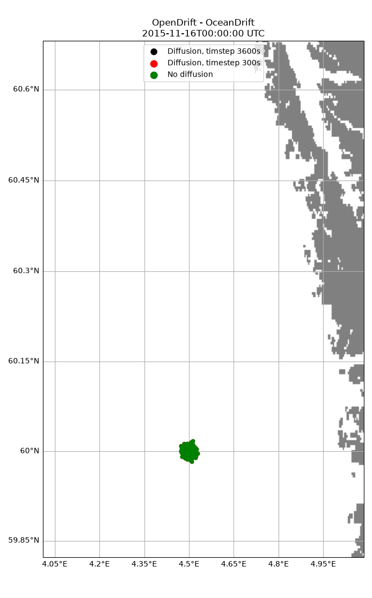

Note
Go to the end to download the full example code.
Horizontal diffusion
from datetime import datetime, timedelta
from opendrift import test_data_folder as tdf
from opendrift.readers import reader_netCDF_CF_generic
from opendrift.models.oceandrift import OceanDrift
lon = 4.5; lat = 60.0; # Outside Bergen
o = OceanDrift(loglevel=20) # Set loglevel to 0 for debug information
13:34:51 INFO opendrift:568: OpenDriftSimulation initialised (version 1.14.9 / v1.14.9-41-g4a71a9f)
Adding readers
# Arome atmospheric model
reader_arome = reader_netCDF_CF_generic.Reader(tdf + '16Nov2015_NorKyst_z_surface/arome_subset_16Nov2015.nc')
# Norkyst ocean model
reader_norkyst = reader_netCDF_CF_generic.Reader(tdf + '16Nov2015_NorKyst_z_surface/norkyst800_subset_16Nov2015.nc')
# Uncomment to use live data from thredds
#reader_arome = reader_netCDF_CF_generic.Reader('https://thredds.met.no/thredds/dodsC/mepslatest/meps_lagged_6_h_latest_2_5km_latest.nc')
#reader_norkyst = reader_netCDF_CF_generic.Reader('https://thredds.met.no/thredds/dodsC/fou-hi/norkystv3_800m_m00_be')
o.add_reader([reader_norkyst, reader_arome])
13:34:51 INFO opendrift.readers:64: Opening file with xr.open_dataset
13:34:52 INFO opendrift.readers.reader_netCDF_CF_generic:340: Detected dimensions: {'time': 'time', 'x': 'x', 'y': 'y'}
13:34:52 INFO opendrift.readers:64: Opening file with xr.open_dataset
13:34:52 INFO opendrift.readers.reader_netCDF_CF_generic:340: Detected dimensions: {'x': 'X', 'y': 'Y', 'z': 'depth', 'time': 'time'}
First run, with no horizontal diffusion
o.set_config('drift:current_uncertainty', 0)
o.set_config('drift:wind_uncertainty', 0)
time = reader_arome.start_time
o.seed_elements(lon, lat, radius=500, number=2000, time=time)
o.run(duration=timedelta(hours=24))
13:34:52 INFO opendrift.models.basemodel.environment:203: Adding a global landmask from GSHHG
13:34:57 INFO opendrift.models.basemodel.environment:227: Fallback values will be used for the following variables which have no readers:
13:34:57 INFO opendrift.models.basemodel.environment:230: sea_surface_height: 0.000000
13:34:57 INFO opendrift.models.basemodel.environment:230: upward_sea_water_velocity: 0.000000
13:34:57 INFO opendrift.models.basemodel.environment:230: ocean_vertical_diffusivity: 0.000000
13:34:57 INFO opendrift.models.basemodel.environment:230: horizontal_diffusivity: 0.000000
13:34:57 INFO opendrift.models.basemodel.environment:230: sea_surface_wave_significant_height: 0.000000
13:34:57 INFO opendrift.models.basemodel.environment:230: sea_surface_wave_stokes_drift_x_velocity: 0.000000
13:34:57 INFO opendrift.models.basemodel.environment:230: sea_surface_wave_stokes_drift_y_velocity: 0.000000
13:34:57 INFO opendrift.models.basemodel.environment:230: ocean_mixed_layer_thickness: 50.000000
13:34:57 INFO opendrift.models.basemodel.environment:230: sea_floor_depth_below_sea_level: 10000.000000
13:34:57 INFO opendrift:1894: Skipping environment variable ocean_vertical_diffusivity because of condition ['drift:vertical_mixing', 'is', False]
13:34:57 INFO opendrift:1894: Skipping environment variable ocean_mixed_layer_thickness because of condition ['drift:vertical_mixing', 'is', False]
13:34:57 INFO opendrift:1905: Storing previous values of element property lon because of condition (('general:coastline_action', 'in', ['stranding', 'previous']), 'or', ('general:seafloor_action', 'in', ['previous']))
13:34:57 INFO opendrift:1905: Storing previous values of element property lat because of condition (('general:coastline_action', 'in', ['stranding', 'previous']), 'or', ('general:seafloor_action', 'in', ['previous']))
13:34:57 INFO opendrift:1913: Storing previous values of environment variable sea_surface_height because of condition ['drift:vertical_advection', 'is', True]
13:34:57 INFO opendrift:947: Using existing reader for land_binary_mask to move elements to ocean
13:34:57 INFO opendrift:978: All points are in ocean
13:34:57 INFO opendrift:2202: 2015-11-16 00:00:00 - step 1 of 24 - 2000 active elements (0 deactivated)
13:34:57 INFO opendrift:2202: 2015-11-16 01:00:00 - step 2 of 24 - 2000 active elements (0 deactivated)
13:34:57 INFO opendrift:2202: 2015-11-16 02:00:00 - step 3 of 24 - 2000 active elements (0 deactivated)
13:34:57 INFO opendrift:2202: 2015-11-16 03:00:00 - step 4 of 24 - 2000 active elements (0 deactivated)
13:34:57 INFO opendrift:2202: 2015-11-16 04:00:00 - step 5 of 24 - 2000 active elements (0 deactivated)
13:34:57 INFO opendrift:2202: 2015-11-16 05:00:00 - step 6 of 24 - 2000 active elements (0 deactivated)
13:34:57 INFO opendrift:2202: 2015-11-16 06:00:00 - step 7 of 24 - 2000 active elements (0 deactivated)
13:34:57 INFO opendrift:2202: 2015-11-16 07:00:00 - step 8 of 24 - 2000 active elements (0 deactivated)
13:34:57 INFO opendrift:2202: 2015-11-16 08:00:00 - step 9 of 24 - 2000 active elements (0 deactivated)
13:34:57 INFO opendrift:2202: 2015-11-16 09:00:00 - step 10 of 24 - 2000 active elements (0 deactivated)
13:34:57 INFO opendrift:2202: 2015-11-16 10:00:00 - step 11 of 24 - 2000 active elements (0 deactivated)
13:34:58 INFO opendrift:2202: 2015-11-16 11:00:00 - step 12 of 24 - 2000 active elements (0 deactivated)
13:34:58 INFO opendrift:2202: 2015-11-16 12:00:00 - step 13 of 24 - 2000 active elements (0 deactivated)
13:34:58 INFO opendrift:2202: 2015-11-16 13:00:00 - step 14 of 24 - 2000 active elements (0 deactivated)
13:34:58 INFO opendrift:2202: 2015-11-16 14:00:00 - step 15 of 24 - 2000 active elements (0 deactivated)
13:34:58 INFO opendrift:2202: 2015-11-16 15:00:00 - step 16 of 24 - 2000 active elements (0 deactivated)
13:34:58 INFO opendrift:2202: 2015-11-16 16:00:00 - step 17 of 24 - 2000 active elements (0 deactivated)
13:34:58 INFO opendrift:2202: 2015-11-16 17:00:00 - step 18 of 24 - 2000 active elements (0 deactivated)
13:34:58 INFO opendrift:2202: 2015-11-16 18:00:00 - step 19 of 24 - 2000 active elements (0 deactivated)
13:34:58 INFO opendrift:2202: 2015-11-16 19:00:00 - step 20 of 24 - 2000 active elements (0 deactivated)
13:34:58 INFO opendrift:2202: 2015-11-16 20:00:00 - step 21 of 24 - 2000 active elements (0 deactivated)
13:34:58 INFO opendrift:2202: 2015-11-16 21:00:00 - step 22 of 24 - 2000 active elements (0 deactivated)
13:34:58 INFO opendrift:2202: 2015-11-16 22:00:00 - step 23 of 24 - 2000 active elements (0 deactivated)
13:34:58 INFO opendrift:2202: 2015-11-16 23:00:00 - step 24 of 24 - 2000 active elements (0 deactivated)
Second run, identical, except for added diffusion
o2 = OceanDrift(loglevel=20) # Set loglevel to 0 for debug information
o2.add_reader([reader_norkyst, reader_arome])
#o2.set_config('drift:current_uncertainty', .2) # Difference from first run
#o2.set_config('drift:wind_uncertainty', 1) # Difference from first run
o2.set_config('environment:constant:horizontal_diffusivity', 10) # Difference from first run
o2.seed_elements(lon, lat, radius=500, number=2000, time=time)
o2.run(duration=timedelta(hours=24))
13:34:58 INFO opendrift:568: OpenDriftSimulation initialised (version 1.14.9 / v1.14.9-41-g4a71a9f)
13:34:58 INFO opendrift.models.basemodel.environment:203: Adding a global landmask from GSHHG
13:34:58 INFO opendrift.models.basemodel.environment:227: Fallback values will be used for the following variables which have no readers:
13:34:58 INFO opendrift.models.basemodel.environment:230: sea_surface_height: 0.000000
13:34:58 INFO opendrift.models.basemodel.environment:230: upward_sea_water_velocity: 0.000000
13:34:58 INFO opendrift.models.basemodel.environment:230: ocean_vertical_diffusivity: 0.000000
13:34:58 INFO opendrift.models.basemodel.environment:230: sea_surface_wave_significant_height: 0.000000
13:34:58 INFO opendrift.models.basemodel.environment:230: sea_surface_wave_stokes_drift_x_velocity: 0.000000
13:34:58 INFO opendrift.models.basemodel.environment:230: sea_surface_wave_stokes_drift_y_velocity: 0.000000
13:34:58 INFO opendrift.models.basemodel.environment:230: ocean_mixed_layer_thickness: 50.000000
13:34:58 INFO opendrift.models.basemodel.environment:230: sea_floor_depth_below_sea_level: 10000.000000
13:34:58 INFO opendrift:1894: Skipping environment variable ocean_vertical_diffusivity because of condition ['drift:vertical_mixing', 'is', False]
13:34:58 INFO opendrift:1894: Skipping environment variable ocean_mixed_layer_thickness because of condition ['drift:vertical_mixing', 'is', False]
13:34:58 INFO opendrift:1905: Storing previous values of element property lon because of condition (('general:coastline_action', 'in', ['stranding', 'previous']), 'or', ('general:seafloor_action', 'in', ['previous']))
13:34:58 INFO opendrift:1905: Storing previous values of element property lat because of condition (('general:coastline_action', 'in', ['stranding', 'previous']), 'or', ('general:seafloor_action', 'in', ['previous']))
13:34:58 INFO opendrift:1913: Storing previous values of environment variable sea_surface_height because of condition ['drift:vertical_advection', 'is', True]
13:34:58 INFO opendrift:947: Using existing reader for land_binary_mask to move elements to ocean
13:34:58 INFO opendrift:978: All points are in ocean
13:34:58 INFO opendrift:2202: 2015-11-16 00:00:00 - step 1 of 24 - 2000 active elements (0 deactivated)
13:34:58 INFO opendrift:2202: 2015-11-16 01:00:00 - step 2 of 24 - 2000 active elements (0 deactivated)
13:34:58 INFO opendrift:2202: 2015-11-16 02:00:00 - step 3 of 24 - 2000 active elements (0 deactivated)
13:34:59 INFO opendrift:2202: 2015-11-16 03:00:00 - step 4 of 24 - 2000 active elements (0 deactivated)
13:34:59 INFO opendrift:2202: 2015-11-16 04:00:00 - step 5 of 24 - 2000 active elements (0 deactivated)
13:34:59 INFO opendrift:2202: 2015-11-16 05:00:00 - step 6 of 24 - 2000 active elements (0 deactivated)
13:34:59 INFO opendrift:2202: 2015-11-16 06:00:00 - step 7 of 24 - 2000 active elements (0 deactivated)
13:34:59 INFO opendrift:2202: 2015-11-16 07:00:00 - step 8 of 24 - 2000 active elements (0 deactivated)
13:34:59 INFO opendrift:2202: 2015-11-16 08:00:00 - step 9 of 24 - 2000 active elements (0 deactivated)
13:34:59 INFO opendrift:2202: 2015-11-16 09:00:00 - step 10 of 24 - 2000 active elements (0 deactivated)
13:34:59 INFO opendrift:2202: 2015-11-16 10:00:00 - step 11 of 24 - 2000 active elements (0 deactivated)
13:34:59 INFO opendrift:2202: 2015-11-16 11:00:00 - step 12 of 24 - 2000 active elements (0 deactivated)
13:34:59 INFO opendrift:2202: 2015-11-16 12:00:00 - step 13 of 24 - 2000 active elements (0 deactivated)
13:34:59 INFO opendrift:2202: 2015-11-16 13:00:00 - step 14 of 24 - 2000 active elements (0 deactivated)
13:34:59 INFO opendrift:2202: 2015-11-16 14:00:00 - step 15 of 24 - 2000 active elements (0 deactivated)
13:34:59 INFO opendrift:2202: 2015-11-16 15:00:00 - step 16 of 24 - 2000 active elements (0 deactivated)
13:34:59 INFO opendrift:2202: 2015-11-16 16:00:00 - step 17 of 24 - 2000 active elements (0 deactivated)
13:34:59 INFO opendrift:2202: 2015-11-16 17:00:00 - step 18 of 24 - 2000 active elements (0 deactivated)
13:34:59 INFO opendrift:2202: 2015-11-16 18:00:00 - step 19 of 24 - 2000 active elements (0 deactivated)
13:34:59 INFO opendrift:2202: 2015-11-16 19:00:00 - step 20 of 24 - 2000 active elements (0 deactivated)
13:34:59 INFO opendrift:2202: 2015-11-16 20:00:00 - step 21 of 24 - 2000 active elements (0 deactivated)
13:34:59 INFO opendrift:2202: 2015-11-16 21:00:00 - step 22 of 24 - 2000 active elements (0 deactivated)
13:34:59 INFO opendrift:2202: 2015-11-16 22:00:00 - step 23 of 24 - 2000 active elements (0 deactivated)
13:34:59 INFO opendrift:2202: 2015-11-16 23:00:00 - step 24 of 24 - 2000 active elements (0 deactivated)
Third run, identical, except for diffusion and shorter timestep
o3 = OceanDrift(loglevel=20) # Set loglevel to 0 for debug information
o3.add_reader([reader_norkyst, reader_arome])
#o3.set_config('drift:current_uncertainty', .2) # Difference from first run
#o3.set_config('drift:wind_uncertainty', 1) # Difference from first run
o3.set_config('environment:constant:horizontal_diffusivity', 10) # Difference from first run
o3.seed_elements(lon, lat, radius=500, number=2000, time=time)
o3.run(duration=timedelta(hours=24), time_step=300, time_step_output=3600)
13:35:00 INFO opendrift:568: OpenDriftSimulation initialised (version 1.14.9 / v1.14.9-41-g4a71a9f)
13:35:00 INFO opendrift.models.basemodel.environment:203: Adding a global landmask from GSHHG
13:35:00 INFO opendrift.models.basemodel.environment:227: Fallback values will be used for the following variables which have no readers:
13:35:00 INFO opendrift.models.basemodel.environment:230: sea_surface_height: 0.000000
13:35:00 INFO opendrift.models.basemodel.environment:230: upward_sea_water_velocity: 0.000000
13:35:00 INFO opendrift.models.basemodel.environment:230: ocean_vertical_diffusivity: 0.000000
13:35:00 INFO opendrift.models.basemodel.environment:230: sea_surface_wave_significant_height: 0.000000
13:35:00 INFO opendrift.models.basemodel.environment:230: sea_surface_wave_stokes_drift_x_velocity: 0.000000
13:35:00 INFO opendrift.models.basemodel.environment:230: sea_surface_wave_stokes_drift_y_velocity: 0.000000
13:35:00 INFO opendrift.models.basemodel.environment:230: ocean_mixed_layer_thickness: 50.000000
13:35:00 INFO opendrift.models.basemodel.environment:230: sea_floor_depth_below_sea_level: 10000.000000
13:35:00 INFO opendrift:1894: Skipping environment variable ocean_vertical_diffusivity because of condition ['drift:vertical_mixing', 'is', False]
13:35:00 INFO opendrift:1894: Skipping environment variable ocean_mixed_layer_thickness because of condition ['drift:vertical_mixing', 'is', False]
13:35:00 INFO opendrift:1905: Storing previous values of element property lon because of condition (('general:coastline_action', 'in', ['stranding', 'previous']), 'or', ('general:seafloor_action', 'in', ['previous']))
13:35:00 INFO opendrift:1905: Storing previous values of element property lat because of condition (('general:coastline_action', 'in', ['stranding', 'previous']), 'or', ('general:seafloor_action', 'in', ['previous']))
13:35:00 INFO opendrift:1913: Storing previous values of environment variable sea_surface_height because of condition ['drift:vertical_advection', 'is', True]
13:35:00 INFO opendrift:947: Using existing reader for land_binary_mask to move elements to ocean
13:35:00 INFO opendrift:978: All points are in ocean
13:35:00 INFO opendrift:2202: 2015-11-16 00:00:00 - step 1 of 288 - 2000 active elements (0 deactivated)
13:35:00 INFO opendrift:2202: 2015-11-16 00:05:00 - step 2 of 288 - 2000 active elements (0 deactivated)
13:35:00 INFO opendrift:2202: 2015-11-16 00:10:00 - step 3 of 288 - 2000 active elements (0 deactivated)
13:35:00 INFO opendrift:2202: 2015-11-16 00:15:00 - step 4 of 288 - 2000 active elements (0 deactivated)
13:35:00 INFO opendrift:2202: 2015-11-16 00:20:00 - step 5 of 288 - 2000 active elements (0 deactivated)
13:35:00 INFO opendrift:2202: 2015-11-16 00:25:00 - step 6 of 288 - 2000 active elements (0 deactivated)
13:35:00 INFO opendrift:2202: 2015-11-16 00:30:00 - step 7 of 288 - 2000 active elements (0 deactivated)
13:35:00 INFO opendrift:2202: 2015-11-16 00:35:00 - step 8 of 288 - 2000 active elements (0 deactivated)
13:35:00 INFO opendrift:2202: 2015-11-16 00:40:00 - step 9 of 288 - 2000 active elements (0 deactivated)
13:35:00 INFO opendrift:2202: 2015-11-16 00:45:00 - step 10 of 288 - 2000 active elements (0 deactivated)
13:35:00 INFO opendrift:2202: 2015-11-16 00:50:00 - step 11 of 288 - 2000 active elements (0 deactivated)
13:35:00 INFO opendrift:2202: 2015-11-16 00:55:00 - step 12 of 288 - 2000 active elements (0 deactivated)
13:35:00 INFO opendrift:2202: 2015-11-16 01:00:00 - step 13 of 288 - 2000 active elements (0 deactivated)
13:35:00 INFO opendrift:2202: 2015-11-16 01:05:00 - step 14 of 288 - 2000 active elements (0 deactivated)
13:35:00 INFO opendrift:2202: 2015-11-16 01:10:00 - step 15 of 288 - 2000 active elements (0 deactivated)
13:35:00 INFO opendrift:2202: 2015-11-16 01:15:00 - step 16 of 288 - 2000 active elements (0 deactivated)
13:35:00 INFO opendrift:2202: 2015-11-16 01:20:00 - step 17 of 288 - 2000 active elements (0 deactivated)
13:35:00 INFO opendrift:2202: 2015-11-16 01:25:00 - step 18 of 288 - 2000 active elements (0 deactivated)
13:35:00 INFO opendrift:2202: 2015-11-16 01:30:00 - step 19 of 288 - 2000 active elements (0 deactivated)
13:35:00 INFO opendrift:2202: 2015-11-16 01:35:00 - step 20 of 288 - 2000 active elements (0 deactivated)
13:35:00 INFO opendrift:2202: 2015-11-16 01:40:00 - step 21 of 288 - 2000 active elements (0 deactivated)
13:35:00 INFO opendrift:2202: 2015-11-16 01:45:00 - step 22 of 288 - 2000 active elements (0 deactivated)
13:35:00 INFO opendrift:2202: 2015-11-16 01:50:00 - step 23 of 288 - 2000 active elements (0 deactivated)
13:35:00 INFO opendrift:2202: 2015-11-16 01:55:00 - step 24 of 288 - 2000 active elements (0 deactivated)
13:35:00 INFO opendrift:2202: 2015-11-16 02:00:00 - step 25 of 288 - 2000 active elements (0 deactivated)
13:35:00 INFO opendrift:2202: 2015-11-16 02:05:00 - step 26 of 288 - 2000 active elements (0 deactivated)
13:35:00 INFO opendrift:2202: 2015-11-16 02:10:00 - step 27 of 288 - 2000 active elements (0 deactivated)
13:35:00 INFO opendrift:2202: 2015-11-16 02:15:00 - step 28 of 288 - 2000 active elements (0 deactivated)
13:35:01 INFO opendrift:2202: 2015-11-16 02:20:00 - step 29 of 288 - 2000 active elements (0 deactivated)
13:35:01 INFO opendrift:2202: 2015-11-16 02:25:00 - step 30 of 288 - 2000 active elements (0 deactivated)
13:35:01 INFO opendrift:2202: 2015-11-16 02:30:00 - step 31 of 288 - 2000 active elements (0 deactivated)
13:35:01 INFO opendrift:2202: 2015-11-16 02:35:00 - step 32 of 288 - 2000 active elements (0 deactivated)
13:35:01 INFO opendrift:2202: 2015-11-16 02:40:00 - step 33 of 288 - 2000 active elements (0 deactivated)
13:35:01 INFO opendrift:2202: 2015-11-16 02:45:00 - step 34 of 288 - 2000 active elements (0 deactivated)
13:35:01 INFO opendrift:2202: 2015-11-16 02:50:00 - step 35 of 288 - 2000 active elements (0 deactivated)
13:35:01 INFO opendrift:2202: 2015-11-16 02:55:00 - step 36 of 288 - 2000 active elements (0 deactivated)
13:35:01 INFO opendrift:2202: 2015-11-16 03:00:00 - step 37 of 288 - 2000 active elements (0 deactivated)
13:35:01 INFO opendrift:2202: 2015-11-16 03:05:00 - step 38 of 288 - 2000 active elements (0 deactivated)
13:35:01 INFO opendrift:2202: 2015-11-16 03:10:00 - step 39 of 288 - 2000 active elements (0 deactivated)
13:35:01 INFO opendrift:2202: 2015-11-16 03:15:00 - step 40 of 288 - 2000 active elements (0 deactivated)
13:35:01 INFO opendrift:2202: 2015-11-16 03:20:00 - step 41 of 288 - 2000 active elements (0 deactivated)
13:35:01 INFO opendrift:2202: 2015-11-16 03:25:00 - step 42 of 288 - 2000 active elements (0 deactivated)
13:35:01 INFO opendrift:2202: 2015-11-16 03:30:00 - step 43 of 288 - 2000 active elements (0 deactivated)
13:35:01 INFO opendrift:2202: 2015-11-16 03:35:00 - step 44 of 288 - 2000 active elements (0 deactivated)
13:35:01 INFO opendrift:2202: 2015-11-16 03:40:00 - step 45 of 288 - 2000 active elements (0 deactivated)
13:35:01 INFO opendrift:2202: 2015-11-16 03:45:00 - step 46 of 288 - 2000 active elements (0 deactivated)
13:35:01 INFO opendrift:2202: 2015-11-16 03:50:00 - step 47 of 288 - 2000 active elements (0 deactivated)
13:35:01 INFO opendrift:2202: 2015-11-16 03:55:00 - step 48 of 288 - 2000 active elements (0 deactivated)
13:35:01 INFO opendrift:2202: 2015-11-16 04:00:00 - step 49 of 288 - 2000 active elements (0 deactivated)
13:35:01 INFO opendrift:2202: 2015-11-16 04:05:00 - step 50 of 288 - 2000 active elements (0 deactivated)
13:35:01 INFO opendrift:2202: 2015-11-16 04:10:00 - step 51 of 288 - 2000 active elements (0 deactivated)
13:35:01 INFO opendrift:2202: 2015-11-16 04:15:00 - step 52 of 288 - 2000 active elements (0 deactivated)
13:35:01 INFO opendrift:2202: 2015-11-16 04:20:00 - step 53 of 288 - 2000 active elements (0 deactivated)
13:35:01 INFO opendrift:2202: 2015-11-16 04:25:00 - step 54 of 288 - 2000 active elements (0 deactivated)
13:35:01 INFO opendrift:2202: 2015-11-16 04:30:00 - step 55 of 288 - 2000 active elements (0 deactivated)
13:35:01 INFO opendrift:2202: 2015-11-16 04:35:00 - step 56 of 288 - 2000 active elements (0 deactivated)
13:35:01 INFO opendrift:2202: 2015-11-16 04:40:00 - step 57 of 288 - 2000 active elements (0 deactivated)
13:35:01 INFO opendrift:2202: 2015-11-16 04:45:00 - step 58 of 288 - 2000 active elements (0 deactivated)
13:35:01 INFO opendrift:2202: 2015-11-16 04:50:00 - step 59 of 288 - 2000 active elements (0 deactivated)
13:35:01 INFO opendrift:2202: 2015-11-16 04:55:00 - step 60 of 288 - 2000 active elements (0 deactivated)
13:35:01 INFO opendrift:2202: 2015-11-16 05:00:00 - step 61 of 288 - 2000 active elements (0 deactivated)
13:35:01 INFO opendrift:2202: 2015-11-16 05:05:00 - step 62 of 288 - 2000 active elements (0 deactivated)
13:35:01 INFO opendrift:2202: 2015-11-16 05:10:00 - step 63 of 288 - 2000 active elements (0 deactivated)
13:35:01 INFO opendrift:2202: 2015-11-16 05:15:00 - step 64 of 288 - 2000 active elements (0 deactivated)
13:35:01 INFO opendrift:2202: 2015-11-16 05:20:00 - step 65 of 288 - 2000 active elements (0 deactivated)
13:35:02 INFO opendrift:2202: 2015-11-16 05:25:00 - step 66 of 288 - 2000 active elements (0 deactivated)
13:35:02 INFO opendrift:2202: 2015-11-16 05:30:00 - step 67 of 288 - 2000 active elements (0 deactivated)
13:35:02 INFO opendrift:2202: 2015-11-16 05:35:00 - step 68 of 288 - 2000 active elements (0 deactivated)
13:35:02 INFO opendrift:2202: 2015-11-16 05:40:00 - step 69 of 288 - 2000 active elements (0 deactivated)
13:35:02 INFO opendrift:2202: 2015-11-16 05:45:00 - step 70 of 288 - 2000 active elements (0 deactivated)
13:35:02 INFO opendrift:2202: 2015-11-16 05:50:00 - step 71 of 288 - 2000 active elements (0 deactivated)
13:35:02 INFO opendrift:2202: 2015-11-16 05:55:00 - step 72 of 288 - 2000 active elements (0 deactivated)
13:35:02 INFO opendrift:2202: 2015-11-16 06:00:00 - step 73 of 288 - 2000 active elements (0 deactivated)
13:35:02 INFO opendrift:2202: 2015-11-16 06:05:00 - step 74 of 288 - 2000 active elements (0 deactivated)
13:35:02 INFO opendrift:2202: 2015-11-16 06:10:00 - step 75 of 288 - 2000 active elements (0 deactivated)
13:35:02 INFO opendrift:2202: 2015-11-16 06:15:00 - step 76 of 288 - 2000 active elements (0 deactivated)
13:35:02 INFO opendrift:2202: 2015-11-16 06:20:00 - step 77 of 288 - 2000 active elements (0 deactivated)
13:35:02 INFO opendrift:2202: 2015-11-16 06:25:00 - step 78 of 288 - 2000 active elements (0 deactivated)
13:35:02 INFO opendrift:2202: 2015-11-16 06:30:00 - step 79 of 288 - 2000 active elements (0 deactivated)
13:35:02 INFO opendrift:2202: 2015-11-16 06:35:00 - step 80 of 288 - 2000 active elements (0 deactivated)
13:35:02 INFO opendrift:2202: 2015-11-16 06:40:00 - step 81 of 288 - 2000 active elements (0 deactivated)
13:35:02 INFO opendrift:2202: 2015-11-16 06:45:00 - step 82 of 288 - 2000 active elements (0 deactivated)
13:35:02 INFO opendrift:2202: 2015-11-16 06:50:00 - step 83 of 288 - 2000 active elements (0 deactivated)
13:35:02 INFO opendrift:2202: 2015-11-16 06:55:00 - step 84 of 288 - 2000 active elements (0 deactivated)
13:35:02 INFO opendrift:2202: 2015-11-16 07:00:00 - step 85 of 288 - 2000 active elements (0 deactivated)
13:35:02 INFO opendrift:2202: 2015-11-16 07:05:00 - step 86 of 288 - 2000 active elements (0 deactivated)
13:35:02 INFO opendrift:2202: 2015-11-16 07:10:00 - step 87 of 288 - 2000 active elements (0 deactivated)
13:35:02 INFO opendrift:2202: 2015-11-16 07:15:00 - step 88 of 288 - 2000 active elements (0 deactivated)
13:35:02 INFO opendrift:2202: 2015-11-16 07:20:00 - step 89 of 288 - 2000 active elements (0 deactivated)
13:35:02 INFO opendrift:2202: 2015-11-16 07:25:00 - step 90 of 288 - 2000 active elements (0 deactivated)
13:35:02 INFO opendrift:2202: 2015-11-16 07:30:00 - step 91 of 288 - 2000 active elements (0 deactivated)
13:35:02 INFO opendrift:2202: 2015-11-16 07:35:00 - step 92 of 288 - 2000 active elements (0 deactivated)
13:35:02 INFO opendrift:2202: 2015-11-16 07:40:00 - step 93 of 288 - 2000 active elements (0 deactivated)
13:35:02 INFO opendrift:2202: 2015-11-16 07:45:00 - step 94 of 288 - 2000 active elements (0 deactivated)
13:35:02 INFO opendrift:2202: 2015-11-16 07:50:00 - step 95 of 288 - 2000 active elements (0 deactivated)
13:35:02 INFO opendrift:2202: 2015-11-16 07:55:00 - step 96 of 288 - 2000 active elements (0 deactivated)
13:35:02 INFO opendrift:2202: 2015-11-16 08:00:00 - step 97 of 288 - 2000 active elements (0 deactivated)
13:35:02 INFO opendrift:2202: 2015-11-16 08:05:00 - step 98 of 288 - 2000 active elements (0 deactivated)
13:35:02 INFO opendrift:2202: 2015-11-16 08:10:00 - step 99 of 288 - 2000 active elements (0 deactivated)
13:35:02 INFO opendrift:2202: 2015-11-16 08:15:00 - step 100 of 288 - 2000 active elements (0 deactivated)
13:35:02 INFO opendrift:2202: 2015-11-16 08:20:00 - step 101 of 288 - 2000 active elements (0 deactivated)
13:35:02 INFO opendrift:2202: 2015-11-16 08:25:00 - step 102 of 288 - 2000 active elements (0 deactivated)
13:35:02 INFO opendrift:2202: 2015-11-16 08:30:00 - step 103 of 288 - 2000 active elements (0 deactivated)
13:35:03 INFO opendrift:2202: 2015-11-16 08:35:00 - step 104 of 288 - 2000 active elements (0 deactivated)
13:35:03 INFO opendrift:2202: 2015-11-16 08:40:00 - step 105 of 288 - 2000 active elements (0 deactivated)
13:35:03 INFO opendrift:2202: 2015-11-16 08:45:00 - step 106 of 288 - 2000 active elements (0 deactivated)
13:35:03 INFO opendrift:2202: 2015-11-16 08:50:00 - step 107 of 288 - 2000 active elements (0 deactivated)
13:35:03 INFO opendrift:2202: 2015-11-16 08:55:00 - step 108 of 288 - 2000 active elements (0 deactivated)
13:35:03 INFO opendrift:2202: 2015-11-16 09:00:00 - step 109 of 288 - 2000 active elements (0 deactivated)
13:35:03 INFO opendrift:2202: 2015-11-16 09:05:00 - step 110 of 288 - 2000 active elements (0 deactivated)
13:35:03 INFO opendrift:2202: 2015-11-16 09:10:00 - step 111 of 288 - 2000 active elements (0 deactivated)
13:35:03 INFO opendrift:2202: 2015-11-16 09:15:00 - step 112 of 288 - 2000 active elements (0 deactivated)
13:35:03 INFO opendrift:2202: 2015-11-16 09:20:00 - step 113 of 288 - 2000 active elements (0 deactivated)
13:35:03 INFO opendrift:2202: 2015-11-16 09:25:00 - step 114 of 288 - 2000 active elements (0 deactivated)
13:35:03 INFO opendrift:2202: 2015-11-16 09:30:00 - step 115 of 288 - 2000 active elements (0 deactivated)
13:35:03 INFO opendrift:2202: 2015-11-16 09:35:00 - step 116 of 288 - 2000 active elements (0 deactivated)
13:35:03 INFO opendrift:2202: 2015-11-16 09:40:00 - step 117 of 288 - 2000 active elements (0 deactivated)
13:35:03 INFO opendrift:2202: 2015-11-16 09:45:00 - step 118 of 288 - 2000 active elements (0 deactivated)
13:35:03 INFO opendrift:2202: 2015-11-16 09:50:00 - step 119 of 288 - 2000 active elements (0 deactivated)
13:35:03 INFO opendrift:2202: 2015-11-16 09:55:00 - step 120 of 288 - 2000 active elements (0 deactivated)
13:35:03 INFO opendrift:2202: 2015-11-16 10:00:00 - step 121 of 288 - 2000 active elements (0 deactivated)
13:35:03 INFO opendrift:2202: 2015-11-16 10:05:00 - step 122 of 288 - 2000 active elements (0 deactivated)
13:35:03 INFO opendrift:2202: 2015-11-16 10:10:00 - step 123 of 288 - 2000 active elements (0 deactivated)
13:35:03 INFO opendrift:2202: 2015-11-16 10:15:00 - step 124 of 288 - 2000 active elements (0 deactivated)
13:35:03 INFO opendrift:2202: 2015-11-16 10:20:00 - step 125 of 288 - 2000 active elements (0 deactivated)
13:35:03 INFO opendrift:2202: 2015-11-16 10:25:00 - step 126 of 288 - 2000 active elements (0 deactivated)
13:35:03 INFO opendrift:2202: 2015-11-16 10:30:00 - step 127 of 288 - 2000 active elements (0 deactivated)
13:35:03 INFO opendrift:2202: 2015-11-16 10:35:00 - step 128 of 288 - 2000 active elements (0 deactivated)
13:35:03 INFO opendrift:2202: 2015-11-16 10:40:00 - step 129 of 288 - 2000 active elements (0 deactivated)
13:35:03 INFO opendrift:2202: 2015-11-16 10:45:00 - step 130 of 288 - 2000 active elements (0 deactivated)
13:35:03 INFO opendrift:2202: 2015-11-16 10:50:00 - step 131 of 288 - 2000 active elements (0 deactivated)
13:35:03 INFO opendrift:2202: 2015-11-16 10:55:00 - step 132 of 288 - 2000 active elements (0 deactivated)
13:35:03 INFO opendrift:2202: 2015-11-16 11:00:00 - step 133 of 288 - 2000 active elements (0 deactivated)
13:35:03 INFO opendrift:2202: 2015-11-16 11:05:00 - step 134 of 288 - 2000 active elements (0 deactivated)
13:35:03 INFO opendrift:2202: 2015-11-16 11:10:00 - step 135 of 288 - 2000 active elements (0 deactivated)
13:35:03 INFO opendrift:2202: 2015-11-16 11:15:00 - step 136 of 288 - 2000 active elements (0 deactivated)
13:35:03 INFO opendrift:2202: 2015-11-16 11:20:00 - step 137 of 288 - 2000 active elements (0 deactivated)
13:35:04 INFO opendrift:2202: 2015-11-16 11:25:00 - step 138 of 288 - 2000 active elements (0 deactivated)
13:35:04 INFO opendrift:2202: 2015-11-16 11:30:00 - step 139 of 288 - 2000 active elements (0 deactivated)
13:35:04 INFO opendrift:2202: 2015-11-16 11:35:00 - step 140 of 288 - 2000 active elements (0 deactivated)
13:35:04 INFO opendrift:2202: 2015-11-16 11:40:00 - step 141 of 288 - 2000 active elements (0 deactivated)
13:35:04 INFO opendrift:2202: 2015-11-16 11:45:00 - step 142 of 288 - 2000 active elements (0 deactivated)
13:35:04 INFO opendrift:2202: 2015-11-16 11:50:00 - step 143 of 288 - 2000 active elements (0 deactivated)
13:35:04 INFO opendrift:2202: 2015-11-16 11:55:00 - step 144 of 288 - 2000 active elements (0 deactivated)
13:35:04 INFO opendrift:2202: 2015-11-16 12:00:00 - step 145 of 288 - 2000 active elements (0 deactivated)
13:35:04 INFO opendrift:2202: 2015-11-16 12:05:00 - step 146 of 288 - 2000 active elements (0 deactivated)
13:35:04 INFO opendrift:2202: 2015-11-16 12:10:00 - step 147 of 288 - 2000 active elements (0 deactivated)
13:35:04 INFO opendrift:2202: 2015-11-16 12:15:00 - step 148 of 288 - 2000 active elements (0 deactivated)
13:35:04 INFO opendrift:2202: 2015-11-16 12:20:00 - step 149 of 288 - 2000 active elements (0 deactivated)
13:35:04 INFO opendrift:2202: 2015-11-16 12:25:00 - step 150 of 288 - 2000 active elements (0 deactivated)
13:35:04 INFO opendrift:2202: 2015-11-16 12:30:00 - step 151 of 288 - 2000 active elements (0 deactivated)
13:35:04 INFO opendrift:2202: 2015-11-16 12:35:00 - step 152 of 288 - 2000 active elements (0 deactivated)
13:35:04 INFO opendrift:2202: 2015-11-16 12:40:00 - step 153 of 288 - 2000 active elements (0 deactivated)
13:35:04 INFO opendrift:2202: 2015-11-16 12:45:00 - step 154 of 288 - 2000 active elements (0 deactivated)
13:35:04 INFO opendrift:2202: 2015-11-16 12:50:00 - step 155 of 288 - 2000 active elements (0 deactivated)
13:35:04 INFO opendrift:2202: 2015-11-16 12:55:00 - step 156 of 288 - 2000 active elements (0 deactivated)
13:35:04 INFO opendrift:2202: 2015-11-16 13:00:00 - step 157 of 288 - 2000 active elements (0 deactivated)
13:35:04 INFO opendrift:2202: 2015-11-16 13:05:00 - step 158 of 288 - 2000 active elements (0 deactivated)
13:35:04 INFO opendrift:2202: 2015-11-16 13:10:00 - step 159 of 288 - 2000 active elements (0 deactivated)
13:35:04 INFO opendrift:2202: 2015-11-16 13:15:00 - step 160 of 288 - 2000 active elements (0 deactivated)
13:35:04 INFO opendrift:2202: 2015-11-16 13:20:00 - step 161 of 288 - 2000 active elements (0 deactivated)
13:35:04 INFO opendrift:2202: 2015-11-16 13:25:00 - step 162 of 288 - 2000 active elements (0 deactivated)
13:35:04 INFO opendrift:2202: 2015-11-16 13:30:00 - step 163 of 288 - 2000 active elements (0 deactivated)
13:35:04 INFO opendrift:2202: 2015-11-16 13:35:00 - step 164 of 288 - 2000 active elements (0 deactivated)
13:35:04 INFO opendrift:2202: 2015-11-16 13:40:00 - step 165 of 288 - 2000 active elements (0 deactivated)
13:35:04 INFO opendrift:2202: 2015-11-16 13:45:00 - step 166 of 288 - 2000 active elements (0 deactivated)
13:35:04 INFO opendrift:2202: 2015-11-16 13:50:00 - step 167 of 288 - 2000 active elements (0 deactivated)
13:35:04 INFO opendrift:2202: 2015-11-16 13:55:00 - step 168 of 288 - 2000 active elements (0 deactivated)
13:35:04 INFO opendrift:2202: 2015-11-16 14:00:00 - step 169 of 288 - 2000 active elements (0 deactivated)
13:35:04 INFO opendrift:2202: 2015-11-16 14:05:00 - step 170 of 288 - 2000 active elements (0 deactivated)
13:35:04 INFO opendrift:2202: 2015-11-16 14:10:00 - step 171 of 288 - 2000 active elements (0 deactivated)
13:35:05 INFO opendrift:2202: 2015-11-16 14:15:00 - step 172 of 288 - 2000 active elements (0 deactivated)
13:35:05 INFO opendrift:2202: 2015-11-16 14:20:00 - step 173 of 288 - 2000 active elements (0 deactivated)
13:35:05 INFO opendrift:2202: 2015-11-16 14:25:00 - step 174 of 288 - 2000 active elements (0 deactivated)
13:35:05 INFO opendrift:2202: 2015-11-16 14:30:00 - step 175 of 288 - 2000 active elements (0 deactivated)
13:35:05 INFO opendrift:2202: 2015-11-16 14:35:00 - step 176 of 288 - 2000 active elements (0 deactivated)
13:35:05 INFO opendrift:2202: 2015-11-16 14:40:00 - step 177 of 288 - 2000 active elements (0 deactivated)
13:35:05 INFO opendrift:2202: 2015-11-16 14:45:00 - step 178 of 288 - 2000 active elements (0 deactivated)
13:35:05 INFO opendrift:2202: 2015-11-16 14:50:00 - step 179 of 288 - 2000 active elements (0 deactivated)
13:35:05 INFO opendrift:2202: 2015-11-16 14:55:00 - step 180 of 288 - 2000 active elements (0 deactivated)
13:35:05 INFO opendrift:2202: 2015-11-16 15:00:00 - step 181 of 288 - 2000 active elements (0 deactivated)
13:35:05 INFO opendrift:2202: 2015-11-16 15:05:00 - step 182 of 288 - 2000 active elements (0 deactivated)
13:35:05 INFO opendrift:2202: 2015-11-16 15:10:00 - step 183 of 288 - 2000 active elements (0 deactivated)
13:35:05 INFO opendrift:2202: 2015-11-16 15:15:00 - step 184 of 288 - 2000 active elements (0 deactivated)
13:35:05 INFO opendrift:2202: 2015-11-16 15:20:00 - step 185 of 288 - 2000 active elements (0 deactivated)
13:35:05 INFO opendrift:2202: 2015-11-16 15:25:00 - step 186 of 288 - 2000 active elements (0 deactivated)
13:35:05 INFO opendrift:2202: 2015-11-16 15:30:00 - step 187 of 288 - 2000 active elements (0 deactivated)
13:35:05 INFO opendrift:2202: 2015-11-16 15:35:00 - step 188 of 288 - 2000 active elements (0 deactivated)
13:35:05 INFO opendrift:2202: 2015-11-16 15:40:00 - step 189 of 288 - 2000 active elements (0 deactivated)
13:35:05 INFO opendrift:2202: 2015-11-16 15:45:00 - step 190 of 288 - 2000 active elements (0 deactivated)
13:35:05 INFO opendrift:2202: 2015-11-16 15:50:00 - step 191 of 288 - 2000 active elements (0 deactivated)
13:35:05 INFO opendrift:2202: 2015-11-16 15:55:00 - step 192 of 288 - 2000 active elements (0 deactivated)
13:35:05 INFO opendrift:2202: 2015-11-16 16:00:00 - step 193 of 288 - 2000 active elements (0 deactivated)
13:35:05 INFO opendrift:2202: 2015-11-16 16:05:00 - step 194 of 288 - 2000 active elements (0 deactivated)
13:35:05 INFO opendrift:2202: 2015-11-16 16:10:00 - step 195 of 288 - 2000 active elements (0 deactivated)
13:35:05 INFO opendrift:2202: 2015-11-16 16:15:00 - step 196 of 288 - 2000 active elements (0 deactivated)
13:35:05 INFO opendrift:2202: 2015-11-16 16:20:00 - step 197 of 288 - 2000 active elements (0 deactivated)
13:35:05 INFO opendrift:2202: 2015-11-16 16:25:00 - step 198 of 288 - 2000 active elements (0 deactivated)
13:35:05 INFO opendrift:2202: 2015-11-16 16:30:00 - step 199 of 288 - 2000 active elements (0 deactivated)
13:35:05 INFO opendrift:2202: 2015-11-16 16:35:00 - step 200 of 288 - 2000 active elements (0 deactivated)
13:35:05 INFO opendrift:2202: 2015-11-16 16:40:00 - step 201 of 288 - 2000 active elements (0 deactivated)
13:35:05 INFO opendrift:2202: 2015-11-16 16:45:00 - step 202 of 288 - 2000 active elements (0 deactivated)
13:35:05 INFO opendrift:2202: 2015-11-16 16:50:00 - step 203 of 288 - 2000 active elements (0 deactivated)
13:35:06 INFO opendrift:2202: 2015-11-16 16:55:00 - step 204 of 288 - 2000 active elements (0 deactivated)
13:35:06 INFO opendrift:2202: 2015-11-16 17:00:00 - step 205 of 288 - 2000 active elements (0 deactivated)
13:35:06 INFO opendrift:2202: 2015-11-16 17:05:00 - step 206 of 288 - 2000 active elements (0 deactivated)
13:35:06 INFO opendrift:2202: 2015-11-16 17:10:00 - step 207 of 288 - 2000 active elements (0 deactivated)
13:35:06 INFO opendrift:2202: 2015-11-16 17:15:00 - step 208 of 288 - 2000 active elements (0 deactivated)
13:35:06 INFO opendrift:2202: 2015-11-16 17:20:00 - step 209 of 288 - 2000 active elements (0 deactivated)
13:35:06 INFO opendrift:2202: 2015-11-16 17:25:00 - step 210 of 288 - 2000 active elements (0 deactivated)
13:35:06 INFO opendrift:2202: 2015-11-16 17:30:00 - step 211 of 288 - 2000 active elements (0 deactivated)
13:35:06 INFO opendrift:2202: 2015-11-16 17:35:00 - step 212 of 288 - 2000 active elements (0 deactivated)
13:35:06 INFO opendrift:2202: 2015-11-16 17:40:00 - step 213 of 288 - 2000 active elements (0 deactivated)
13:35:06 INFO opendrift:2202: 2015-11-16 17:45:00 - step 214 of 288 - 2000 active elements (0 deactivated)
13:35:06 INFO opendrift:2202: 2015-11-16 17:50:00 - step 215 of 288 - 2000 active elements (0 deactivated)
13:35:06 INFO opendrift:2202: 2015-11-16 17:55:00 - step 216 of 288 - 2000 active elements (0 deactivated)
13:35:06 INFO opendrift:2202: 2015-11-16 18:00:00 - step 217 of 288 - 2000 active elements (0 deactivated)
13:35:06 INFO opendrift:2202: 2015-11-16 18:05:00 - step 218 of 288 - 2000 active elements (0 deactivated)
13:35:06 INFO opendrift:2202: 2015-11-16 18:10:00 - step 219 of 288 - 2000 active elements (0 deactivated)
13:35:06 INFO opendrift:2202: 2015-11-16 18:15:00 - step 220 of 288 - 2000 active elements (0 deactivated)
13:35:06 INFO opendrift:2202: 2015-11-16 18:20:00 - step 221 of 288 - 2000 active elements (0 deactivated)
13:35:06 INFO opendrift:2202: 2015-11-16 18:25:00 - step 222 of 288 - 2000 active elements (0 deactivated)
13:35:06 INFO opendrift:2202: 2015-11-16 18:30:00 - step 223 of 288 - 2000 active elements (0 deactivated)
13:35:06 INFO opendrift:2202: 2015-11-16 18:35:00 - step 224 of 288 - 2000 active elements (0 deactivated)
13:35:06 INFO opendrift:2202: 2015-11-16 18:40:00 - step 225 of 288 - 2000 active elements (0 deactivated)
13:35:06 INFO opendrift:2202: 2015-11-16 18:45:00 - step 226 of 288 - 2000 active elements (0 deactivated)
13:35:06 INFO opendrift:2202: 2015-11-16 18:50:00 - step 227 of 288 - 2000 active elements (0 deactivated)
13:35:06 INFO opendrift:2202: 2015-11-16 18:55:00 - step 228 of 288 - 2000 active elements (0 deactivated)
13:35:06 INFO opendrift:2202: 2015-11-16 19:00:00 - step 229 of 288 - 2000 active elements (0 deactivated)
13:35:06 INFO opendrift:2202: 2015-11-16 19:05:00 - step 230 of 288 - 2000 active elements (0 deactivated)
13:35:06 INFO opendrift:2202: 2015-11-16 19:10:00 - step 231 of 288 - 2000 active elements (0 deactivated)
13:35:06 INFO opendrift:2202: 2015-11-16 19:15:00 - step 232 of 288 - 2000 active elements (0 deactivated)
13:35:06 INFO opendrift:2202: 2015-11-16 19:20:00 - step 233 of 288 - 2000 active elements (0 deactivated)
13:35:07 INFO opendrift:2202: 2015-11-16 19:25:00 - step 234 of 288 - 2000 active elements (0 deactivated)
13:35:07 INFO opendrift:2202: 2015-11-16 19:30:00 - step 235 of 288 - 2000 active elements (0 deactivated)
13:35:07 INFO opendrift:2202: 2015-11-16 19:35:00 - step 236 of 288 - 2000 active elements (0 deactivated)
13:35:07 INFO opendrift:2202: 2015-11-16 19:40:00 - step 237 of 288 - 2000 active elements (0 deactivated)
13:35:07 INFO opendrift:2202: 2015-11-16 19:45:00 - step 238 of 288 - 2000 active elements (0 deactivated)
13:35:07 INFO opendrift:2202: 2015-11-16 19:50:00 - step 239 of 288 - 2000 active elements (0 deactivated)
13:35:07 INFO opendrift:2202: 2015-11-16 19:55:00 - step 240 of 288 - 2000 active elements (0 deactivated)
13:35:07 INFO opendrift:2202: 2015-11-16 20:00:00 - step 241 of 288 - 2000 active elements (0 deactivated)
13:35:07 INFO opendrift:2202: 2015-11-16 20:05:00 - step 242 of 288 - 2000 active elements (0 deactivated)
13:35:07 INFO opendrift:2202: 2015-11-16 20:10:00 - step 243 of 288 - 2000 active elements (0 deactivated)
13:35:07 INFO opendrift:2202: 2015-11-16 20:15:00 - step 244 of 288 - 2000 active elements (0 deactivated)
13:35:07 INFO opendrift:2202: 2015-11-16 20:20:00 - step 245 of 288 - 2000 active elements (0 deactivated)
13:35:07 INFO opendrift:2202: 2015-11-16 20:25:00 - step 246 of 288 - 2000 active elements (0 deactivated)
13:35:07 INFO opendrift:2202: 2015-11-16 20:30:00 - step 247 of 288 - 2000 active elements (0 deactivated)
13:35:07 INFO opendrift:2202: 2015-11-16 20:35:00 - step 248 of 288 - 2000 active elements (0 deactivated)
13:35:07 INFO opendrift:2202: 2015-11-16 20:40:00 - step 249 of 288 - 2000 active elements (0 deactivated)
13:35:07 INFO opendrift:2202: 2015-11-16 20:45:00 - step 250 of 288 - 2000 active elements (0 deactivated)
13:35:07 INFO opendrift:2202: 2015-11-16 20:50:00 - step 251 of 288 - 2000 active elements (0 deactivated)
13:35:07 INFO opendrift:2202: 2015-11-16 20:55:00 - step 252 of 288 - 2000 active elements (0 deactivated)
13:35:07 INFO opendrift:2202: 2015-11-16 21:00:00 - step 253 of 288 - 2000 active elements (0 deactivated)
13:35:07 INFO opendrift:2202: 2015-11-16 21:05:00 - step 254 of 288 - 2000 active elements (0 deactivated)
13:35:07 INFO opendrift:2202: 2015-11-16 21:10:00 - step 255 of 288 - 2000 active elements (0 deactivated)
13:35:07 INFO opendrift:2202: 2015-11-16 21:15:00 - step 256 of 288 - 2000 active elements (0 deactivated)
13:35:07 INFO opendrift:2202: 2015-11-16 21:20:00 - step 257 of 288 - 2000 active elements (0 deactivated)
13:35:07 INFO opendrift:2202: 2015-11-16 21:25:00 - step 258 of 288 - 2000 active elements (0 deactivated)
13:35:07 INFO opendrift:2202: 2015-11-16 21:30:00 - step 259 of 288 - 2000 active elements (0 deactivated)
13:35:07 INFO opendrift:2202: 2015-11-16 21:35:00 - step 260 of 288 - 2000 active elements (0 deactivated)
13:35:07 INFO opendrift:2202: 2015-11-16 21:40:00 - step 261 of 288 - 2000 active elements (0 deactivated)
13:35:07 INFO opendrift:2202: 2015-11-16 21:45:00 - step 262 of 288 - 2000 active elements (0 deactivated)
13:35:07 INFO opendrift:2202: 2015-11-16 21:50:00 - step 263 of 288 - 2000 active elements (0 deactivated)
13:35:07 INFO opendrift:2202: 2015-11-16 21:55:00 - step 264 of 288 - 2000 active elements (0 deactivated)
13:35:07 INFO opendrift:2202: 2015-11-16 22:00:00 - step 265 of 288 - 2000 active elements (0 deactivated)
13:35:07 INFO opendrift:2202: 2015-11-16 22:05:00 - step 266 of 288 - 2000 active elements (0 deactivated)
13:35:07 INFO opendrift:2202: 2015-11-16 22:10:00 - step 267 of 288 - 2000 active elements (0 deactivated)
13:35:07 INFO opendrift:2202: 2015-11-16 22:15:00 - step 268 of 288 - 2000 active elements (0 deactivated)
13:35:07 INFO opendrift:2202: 2015-11-16 22:20:00 - step 269 of 288 - 2000 active elements (0 deactivated)
13:35:07 INFO opendrift:2202: 2015-11-16 22:25:00 - step 270 of 288 - 2000 active elements (0 deactivated)
13:35:08 INFO opendrift:2202: 2015-11-16 22:30:00 - step 271 of 288 - 2000 active elements (0 deactivated)
13:35:08 INFO opendrift:2202: 2015-11-16 22:35:00 - step 272 of 288 - 2000 active elements (0 deactivated)
13:35:08 INFO opendrift:2202: 2015-11-16 22:40:00 - step 273 of 288 - 2000 active elements (0 deactivated)
13:35:08 INFO opendrift:2202: 2015-11-16 22:45:00 - step 274 of 288 - 2000 active elements (0 deactivated)
13:35:08 INFO opendrift:2202: 2015-11-16 22:50:00 - step 275 of 288 - 2000 active elements (0 deactivated)
13:35:08 INFO opendrift:2202: 2015-11-16 22:55:00 - step 276 of 288 - 2000 active elements (0 deactivated)
13:35:08 INFO opendrift:2202: 2015-11-16 23:00:00 - step 277 of 288 - 2000 active elements (0 deactivated)
13:35:08 INFO opendrift:2202: 2015-11-16 23:05:00 - step 278 of 288 - 2000 active elements (0 deactivated)
13:35:08 INFO opendrift:2202: 2015-11-16 23:10:00 - step 279 of 288 - 2000 active elements (0 deactivated)
13:35:08 INFO opendrift:2202: 2015-11-16 23:15:00 - step 280 of 288 - 2000 active elements (0 deactivated)
13:35:08 INFO opendrift:2202: 2015-11-16 23:20:00 - step 281 of 288 - 2000 active elements (0 deactivated)
13:35:08 INFO opendrift:2202: 2015-11-16 23:25:00 - step 282 of 288 - 2000 active elements (0 deactivated)
13:35:08 INFO opendrift:2202: 2015-11-16 23:30:00 - step 283 of 288 - 2000 active elements (0 deactivated)
13:35:08 INFO opendrift:2202: 2015-11-16 23:35:00 - step 284 of 288 - 2000 active elements (0 deactivated)
13:35:08 INFO opendrift:2202: 2015-11-16 23:40:00 - step 285 of 288 - 2000 active elements (0 deactivated)
13:35:08 INFO opendrift:2202: 2015-11-16 23:45:00 - step 286 of 288 - 2000 active elements (0 deactivated)
13:35:08 INFO opendrift:2202: 2015-11-16 23:50:00 - step 287 of 288 - 2000 active elements (0 deactivated)
13:35:08 INFO opendrift:2202: 2015-11-16 23:55:00 - step 288 of 288 - 2000 active elements (0 deactivated)
Comparing
o2.animation(compare=[o3, o], legend=['Diffusion, timstep 3600s', 'Diffusion, timestep 300s', 'No diffusion'],
legend_loc='upper center', fast=True)
13:35:08 WARNING opendrift:2565: Plotting fast. This will make your plots less accurate.
13:35:10 INFO opendrift:4768: Saving animation to /root/project/docs/source/gallery/animations/example_horizontal_diffusion_0.gif...
13:35:34 INFO opendrift:3191: Time to make animation: 0:00:25.749291

Total running time of the script: (0 minutes 52.031 seconds)